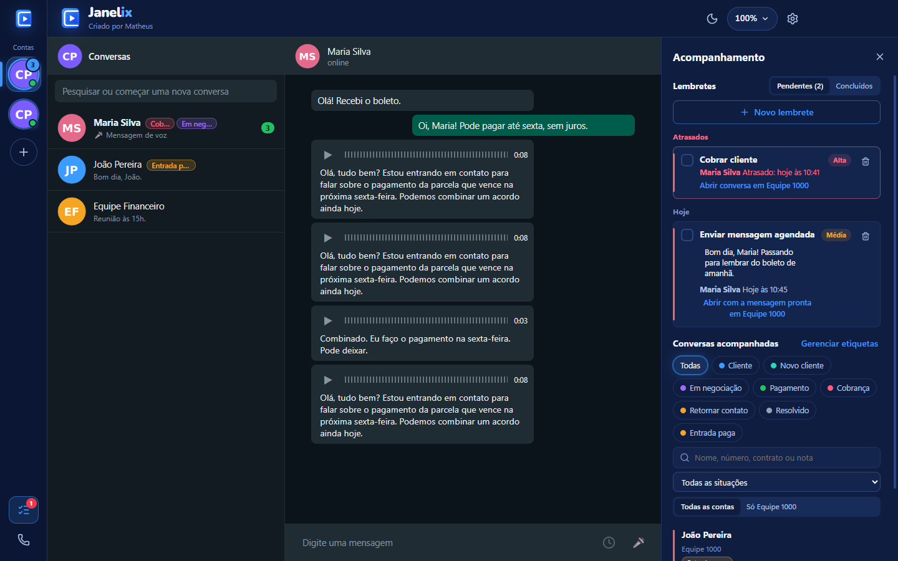
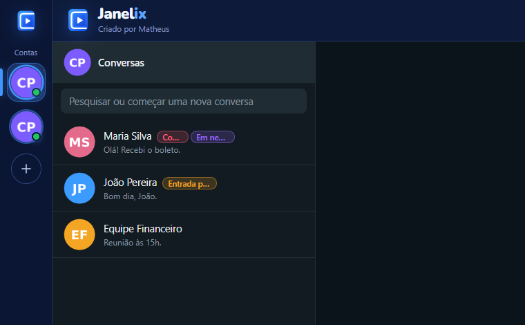
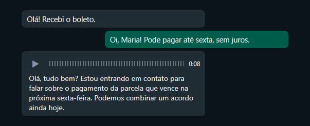
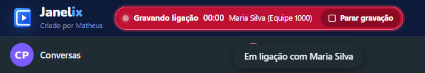
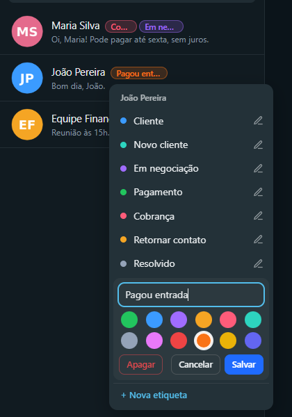
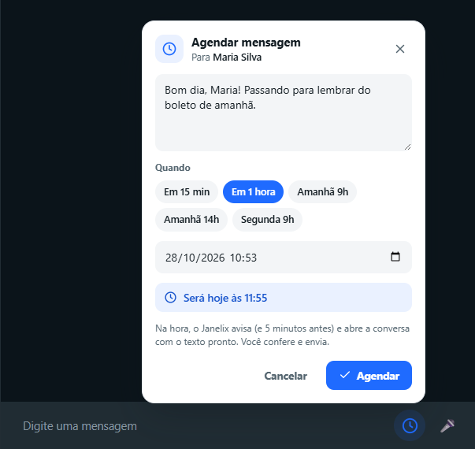
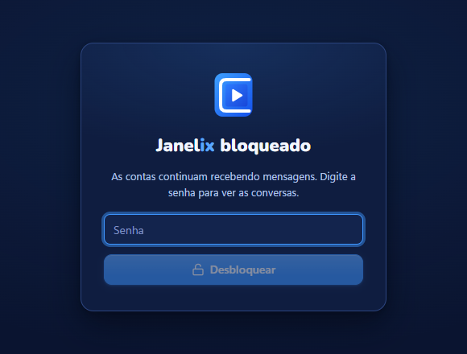
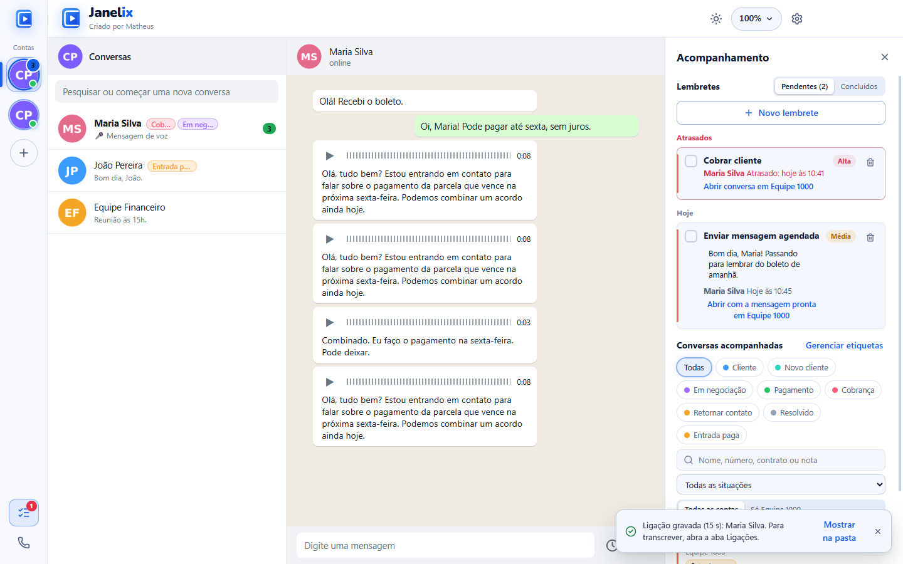
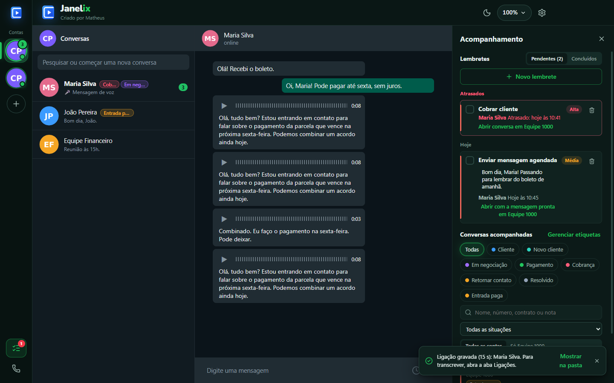

Todas as contas do atendimento numa janela só.
Várias contas de WhatsApp abertas juntas, sem trocar de aba. Veja abaixo, em poucos segundos, o que cada parte faz.

Veja o Janelix por dentro.
Prints do aplicativo de verdade, com dados de teste. Arraste, use as setas do teclado ou os botões.








Feito para quem atende o dia inteiro.
Tudo o que o Janelix faz hoje, sem promessa do que ainda não existe.
Atender
- Várias contas numa janela
- Cada número separado, todos na mesma janela. Nada de abrir uma aba do navegador para cada conta.
- Áudio vira texto, sem internet
- O texto aparece dentro do balão do áudio, aos poucos. É feito no seu computador: o áudio do cliente não vai para lugar nenhum.
- Ligações gravadas
- Um botão vermelho piscando mostra “Gravando ligação” e o tempo. Depois, dá para mandar a gravação numa conversa, como um áudio.
Acompanhar
- Número de cada conta e aviso de queda
- Veja qual número está em cada conta. Se uma conta cair ou for banida, o Janelix avisa e mostra a hora da queda.
- Etiquetas e acompanhamento
- Marque conversas com etiquetas coloridas e acompanhe as pendentes no painel lateral.
- Lembretes agendados
- Marque dia e hora. Na hora, o Janelix avisa e abre a conversa certa.
Proteger
- Bloqueio por senha
- A tela fica bloqueada até alguém digitar a senha. As contas seguem recebendo mensagens.
- Azul, Claro ou Escuro
- Três temas. O Azul é o padrão.
- Atualiza sozinho
- Quando sai versão nova, o Janelix baixa e instala, sem perder contas nem dados.
Instale em dois minutos.
Na primeira vez, o Windows mostra um aviso porque ainda não conhece o Janelix. É só seguir os passos.
-
Baixe o instalador
Clique em Baixar o Janelix. O arquivo
Janelix-Setupvai para a pasta Downloads. -
Abra e passe pelo aviso do Windows
Se aparecer “O Windows protegeu o computador”, clique em Mais informações e depois em Executar assim mesmo. As atualizações seguintes não mostram esse aviso.
-
Conecte as contas
Em cada conta, leia o QR Code com o celular, como no WhatsApp Web. Pronto: dali em diante ele se atualiza sozinho.
Pronto para testar?
Baixe, abra e conecte as contas. O Janelix cuida das atualizações.
Baixar o JanelixPara Windows 10 e 11 · atualiza sozinho
Novidades da versão 2.0.3
- Mensagem agendada avisa 5 minutos antes e na hora, com um botão para abrir a conversa com o texto pronto (quem envia é sempre você)
- Quadro de agendar novo: mostra para quem é, atalhos de horário e diz por extenso quando vai ser ("Será hoje às 10:15")
- A transcrição de um áudio já transcrito aparece na hora ao voltar na conversa, sem transcrever de novo
- Notificação de mensagem mostra a foto de quem mandou (e não mais a foto da sua conta)
- Correção: abrir a conversa pelo aviso agora funciona com contato não salvo (só o número) e com nome que tem emoji
- Correção: o Janelix não trava mais ao abrir quando encontra uma configuração de outra versão
Perguntas
O Janelix é do WhatsApp?
Não. O Janelix não tem ligação com o WhatsApp nem com a Meta. Ele só abre o WhatsApp Web oficial, o mesmo do navegador, várias vezes numa janela.
Minhas conversas vão para algum servidor?
Não. Conversas, áudios e transcrições ficam só no seu computador, guardados com a proteção da sua conta do Windows.
O Janelix envia mensagens sozinho?
Nunca. Mesmo nos lembretes, ele só abre a conversa com o texto pronto: quem envia é sempre você.
Como atualizo?
Não precisa fazer nada. Quando sai uma versão nova, o Janelix baixa e instala sozinho, sem perder contas nem dados.
O Windows mostrou um aviso ao abrir o instalador. E agora?
Clique em Mais informações e depois em Executar assim mesmo. O aviso aparece porque o Windows ainda não conhece o Janelix. Veja o passo a passo.